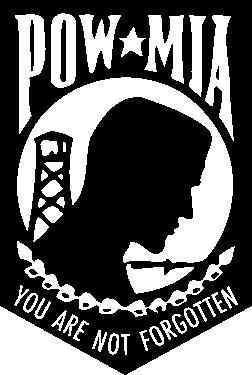

- home - 911 Open Letters -
~
Honorable Madam Chair, And Honorable Judiciary Committee, Montana House of Representatives
Foreword
~
Steve Mason (1940-2005)
photo courtesy of Vietnam Veterans of America 1
~
"Does the Brotherhood exist?"
"That Winston, you will never know. If we choose to set you free when we have finished with you, and if you live to be ninety years old, still you will never learn whether the answer to that question is yes or no. As long as you live, it will be a riddle in your mind."
~ From the book “1984” by George Orwell
~

Honorable Madam Chair, Judiciary Committee, Montana House of Representatives,
It has occurred to me to question authority.
As an honorably-discharged U.S. Marine and veteran of the Vietnam war, and as, alternately throughout my adult life, a successful businessman and artist, and as the father of happy and well-adjusted grown children, and as a man who moved to Montana from the deep South in search of natural beauty and personal freedom, I have come to treasure and respect the traditional spirit of Montana. I wish to denote the only necessary qualifier regarding my opening comment above, my decision to question authority.
I am now questioning Federal authority, but I am not questioning the authority of the State of Montana, nor of Gallatin County, Montana, nor of the small town named Willow Creek, Montana, where I live as I write this series of letters. My questioning of authority is restricted to Federal levels of governmental activity and to the private-sector interests which influence the Federal government and its foreign and domestic policy.
Many Montanans are waking up at present. What we are waking up to is a devastating array of corruption, deception, and abuse emanating from Wall Street and from Washington D.C. This wave of corruption is flowing into every detail of our normal daily lives. I have decided to write the following series of open letters to the Committee as my petition which shall be presented in the concluding letter. All letters which precede that petition shall represent my efforts to establish the grounds on which I intend to base my petition to the legislature of the State of Montana. I am seeking the protection of the government of the State of Montana.
The honest and hard meaning carried in the following statement by former Justice Louis D. Brandeis strikes the chord in my heart from which I now sit to write:
“In a government of laws, the existence of the government will be imperiled if it fails to observe the law scrupulously. Our government is the potent, the omnipotent, teacher. For good or ill, it teaches the whole people by its example. If government becomes a lawbreaker it breeds contempt for the law; it invites every man to become a law unto himself. It invites anarchy.”
~ Justice Louis D. Brandeis
On January 28, 2005, I drove from the Gallatin Valley to Helena with Don Doig, where we each spoke to this Committee on behalf of four bills which had been introduced for passage. That day marked the first time in my sixty years on earth I had ever attempted to become a part of any legislative process. I learned much that day, and was delighted to discover that any ordinary citizen could speak for or against a proposed bill of legislation. I wish to thank this Committee for making that possible. That morning's proceedings sparked within my heart and mind a sense of invitation to myself and to any other citizen of Montana to participate in the workings of government within the State of Montana. Upon my return to Willow Creek, I immediately began to compose the enclosed letters. Being a simple man, I felt that perhaps my voice might after all be heard at the State level, if not at the Federal level. My experience before the Judiciary Committee engendered within me that very sense of hope.
~
By way of introducing myself to the Committee I would like to recall an old wound which in recent years has finally, after many years of reading and research, come to symbolize for my individual life the template about which the enclosed letters shall attempt to elucidate. I have enjoyed a blessed and rewarding life in America, and my years in Montana have been a continuation of an enjoyment in life which I have always valued and treasured. However, I now fear the mechanism of Federal power, and to approach a description of that fear I invite the Committee to learn the following about your humble servant.
At Treadwell High School in Memphis, Tennessee I had been an officer, vice-president, of the school's marching band and had marched in the national contest at Mason City, Iowa, for the world premier of the movie "Music Man" by Meredith Wilson. I had marched with the band in the Rose Bowl parade at Pasadena, California. I was no more than an average student, but in addition to participating in the band at school I also ran on the Cross Country team and the track-and-field team. I won the Memphis city championship trophy in Cross Country in 1961 and contributed that trophy to the school, where it sits among countless other trophies acquired by students like myself over many years. I competed on the swimming team between Cross Country and Track seasons. Those recollections are the only events of interest in an otherwise very average high school experience. I graduated in 1963.
By 1965 I was on the Cross Country team at the University of Memphis, and not doing so well in my studies. I had discovered women, fast cars, radio and television, telephones, movie theaters, and the benefits of working low-wage jobs. I consider myself, looking back, to have been a very naive and oblivious young man of stable family background who at that point in time had not fully appreciated the quality of education which I had enjoyed in the public school system nor the quality of opportunity which the University of Memphis was offering me. I was happy, and in no hurry to move forward with my life. I had never heard of some tiny little far-away country named Viet Nam until 1965.
I had been told by the press, the media, and the Federal government that loyal and patriotic Americans could assist with the preservation of the traditional way of life in America by enlisting in the U.S. military and fighting against “Communism”. The impression I received in 1965 was that the defense of America from the Communist threat logically included waging armed warfare against the forces of Communism - in foreign lands. That concept would marvelously transmute itself over decades into theories which today we hear concerning “fighting terrorism in Iraq and Afghanistan so that we do not have to fight terrorism on U.S. soil”. The catch-phrase for the hard-sell to the American public at that time was "the Domino Effect". The concept itself has been a favorite standby of the pro-war hawks who've infested the Federal government for many decades since.
This proactive tactic, it was announced over and over to the American people in the 1960s, was hoped to prevent the necessity of fighting Communism on “our own doorstep”, on American soil. Pointedly, fighting Communism in Vietnam, militarily and otherwise, was hoped to in itself prevent something which every American citizen who lived through the 1960s heard described incessantly as the “Domino Effect”. The theory of the Domino Effect indicated that if Vietnam were to fall to Communist rule, neighboring nation-states such as Laos and Cambodia and Thailand would subsequently fall to Communism. The U.S. presence in Vietnam, militarily and otherwise, was intended to prevent the loss of Southeast Asia to Communism. Or so we were all told.
To that end I ignored the advice of my loving parents, quit college, left the girls and the fast cars behind, and joined the Marines in September, 1965. I kept volunteering all the way to Viet Nam. (Today the country is known as Vietnam - back in 1965 it was two words, Viet Nam.)
That all made sense to me, at that time, and government's propaganda convinced me to enlist in the effort just as every previous generation of my family had always done during their generations' respective wars. I saw it as my duty, as well as an opportunity to give something back to my country from the bountiful and blessed life I had to that date always enjoyed. It would be many years later that I would discover that I had been sold a frame which enclosed the standard government-issued portrait of a great lie, a massive deception. What was shown to me by the picture that was framed by the policy makers in Washington D.C. was a fleeting ghost of deliberately manipulated mass illusion, a deception over which I risked my life in military combat in Vietnam. I survived only by the invisible hand of a fate much larger than I can yet imagine. Twenty years after my return to America from Viet Nam, I began to discover the breadth and depth of my personal deception by Federal treachery. As the now-deceased poet-laureate of the Vietnam Veterans of America, Steve Mason, pictured above, so famously said it:
“Old soldiers with bad gums find out too late whom they really served.” - Steve Mason
I was lied to. My generation was lied to. America was deceived by America's government. Fifty-eight thousand names are on that black wall now. For nothing. For worse than nothing.
There is a saying within the United States Marine Corps: “Once a Marine, always a Marine!” Because of the extensive mental conditioning I received at the Marine Corps Recruit Training facility at Parris Island, South Carolina, and at the subsequent Infantry-Training Regiment at Camp Lejeune, North Carolina, and because of the pride in the Marine Corps tradition which welled-up inside me countless times during the course of my service and ever-afterward, I fully understand the meaning which stands powerfully behind that statement, and today I take that “saying” as seriously as ever. Once a Marine, always a Marine.
As a Marine I took an oath to protect this nation and its Constitution against enemies foreign and domestic – against enemies from without and from within. This collection of letters to the Montana House of Representatives Judiciary Committee is in my view the honest and innocent carrying forward of an oath I once swore to the people of America.
This series of letters to the Judiciary Committee represents my peaceful, non-violent effort to fulfill my duty as an American, a moral human being, a sovereign soul, and a former U.S. Marine. I now understand that my country and yours is under siege by “enemies from within”, and these letters shall reveal the documentation and hidden history by which I have drawn that conclusion. I thank each of you for reading my presentation.
As an attention focus, I would now state that I believe criminal persons sitting in the highest seats of Federal office were involved in the three major “terrorist events” on U.S. soil – the 1993 WTC bombing, the 1995 Oklahoma City Federal building bombing, and the attacks of “911”. I also state that two undesirable effects of that criminality are presently observable. They are 1) the establishing of a military-police state here in the United States of America and 2) the establishing of a global empire in the name of the United States of America. I further state that these two effects of criminal activity inside our seats of Federal government are the result of an organized and coordinated plan to assimilate our nation into a “one-world government”; and that this plan is no longer a guarded secret; and that certain corporate interests, private-sector interests, and tax-exempt foundations have been and are yet in collusion with those criminals who have operated within seats of Federal offices.
Michael C. Ruppert was the first man, to my knowledge, to publicly accuse Vice President Cheney of playing a grave role in the attacks of 911, as Mr. Ruppert spoke before the Commonwealth Club of California in late 2004, and subsequently as he brought forth and published his book very soon after addressing the CCC. His book, short-titled “Crossing The Rubicon”, is footnoted fully and often throughout this collection of letters. I mention Mr. Ruppert's book so as to refer directly to one of the most comprehensively composed bodies of factual referencing and research, and to let it be known that some of my present thesis draws liberally upon the work of Michael C. Ruppert.
I shall draw upon, of course, many other sources, but it is my opinion that Mr. Ruppert was the first individual to include Vice President Cheney as being among the suspects who may have been responsible for assisting and/or facilitating the crimes of 911. The financing of 911 was apparently in other hands, but the facilitation was most certainly, by White House press release of May 08, 2001, in Dick Cheney's hands. What I am attempting to do in this series of letters is to show that in reality Mr. Cheney is under the direction of yet more powerfully-placed individuals who directed the attacks of 911 from “behind the scenes” - and who did so without having to utter the first order. This series of letters is not an attempt to parrot Michael C. Ruppert's work, but to enhance a general understanding of that work by providing substantiating historical perspectives and precedent, and by adding aspects about the war on terror which are not covered in Mr. Ruppert's book.
My thesis is that a relatively small group of knowing, insidious, corrupt, greedy, and overtly evil men in positions of unspeakable power have caused the arrangement of circumstances on the world's stage which logically, and in an almost predictable manner, have created the three centerpiece “terror events” on U.S. soil; and that this has been done to us for a definable purpose. As each Honorable Member of the Committee reads the enclosed letters, I trust that my research shall prove convincing and credible. And, if I am able finally to make the case to the satisfaction of the Committee, I shall beseech this Committee to assist me in petitioning the government of the State of Montana for protection against the activities of the current Federal government in Washington D.C.
~
“The nation's immediate problem is that while the common man fights America's wars, the intellectual elite sets its agenda. Today, whether the West lives or dies is in the hands of its new power elite: those who set the terms of public debate, who manipulate the symbols, who decide whether nations or leaders will be depicted on 100 million television sets as 'good' or 'bad.' This power elite sets the limits of the possible for Presidents and Congress. It molds the impressions that move the nation, or that mire it.” - from The Real War (1980) by President Richard Nixon.
~
“The real truth of the matter is, as you and I know, that a financial element in the larger centers has owned the Government ever since the days of Andrew Jackson...” ~ Letter from President Franklin Delano Roosevelt on November 21, 1933, to Colonel Edward Mandel House, former aide and adviser to President Woodrow Wilson.
~
While this cabal of ill-willed men may be demonstrated to exist beyond all normal bounds of conscience, they have not limited their attempts at controlling America to the three above-mentioned “terror events”, and I therefore intend to go into several other theaters of their operations – using their own words, their own published articles, their own published books, their own public interviews and presentations and speeches. I also intend to use corporate records, public-record documents, U.S. Congressional records, public-domain broadcasts including transcribed C-SPAN segments, media and press publications, U.S. Senate and House hearings, Congressional investigation reports, Committee and Sub-committee reports, and other sources such as the Internet websites of various corporations and non-governmental organizations and multi-national operations and Federal agencies, departments, and institutions including but not limited to the White House and the Department of Defense and the Justice Department and the State Department.
To accomplish this for the Committee I feel compelled to draw upon aspects of seemingly dry history. I include this history because without a perspective rendered by a knowledge of some suppressed “inconvenient history”, I feel no student of current events can achieve the greater potential for understanding. Indeed, I would state that all “precedent” exists only in history, and that “precedent” precedes and influences the shaping of today's current events.
I here and now declare that although I am not a member of any political party I yet am deeply concerned about the current role being played in today's world by politics.
I here and now declare that although I am not a member of any religion, I am deeply concerned about direct but subtle threats to America's tradition of religious freedom and the current siege of Christianity.
I here and now declare that in my adult life since returning home from a foreign war I have created and operated three small businesses, one of which was a Tennessee Sub-Chapter “S” corporation; and that I have been both an employee for other businesses and a tax-paying employer of employees for two of my three small businesses.
As I was convicted in 1965 to fight Communism and any other threat against the United States of America, both foreign and domestic, I realize now that I have never shirked my oath of duty to America, and this body of letters is the result of my sense of duty as a Montanan, an American, and as a former U.S. Marine. It also represents my stand as a sovereign soul and human being of conscience.
In closing this
foreword, I wish to quote a former FBI translator who is presently under two
U.S. Justice Department “gag orders” because of what she discovered regarding
the financing of the 911 terrorist attacks while working inside the FBI; a
courageous and dedicated whistle-blower, a fearless woman named Sibel Edmonds:
Sibel Edmonds / former FBI translator
“It is not only our right to question authority, it is our duty.” - Sibel Edmonds 3
Respectfully,
Elias Alias
co-founder, The Jefferson River Coalition (2005)
Notes:
1) The Vietnam Veterans of America is America's premier service organization for veterans. Their website is: http://www.vva.org
2) Crossing The Rubicon: The Decline of the American Empire at the End of the Age of Oil
by Michael C. Ruppert; foreword by Catherine Austin Fitts; copyright 2004 by Michael C. Ruppert; New Society Publishers, P.O. Box 189, Gabriola Island, BC VOR 1XO, Canada, 1-800-567-6772
3) Sibel Edmonds testified before the Kean 911 Commission. Her information was not published in the Committee's report. Her letter to the Kean 911 Commission is here: http://www.justacitizen.com/articles_documents/Letter_to_Kean.pdf
Sibel Edmonds' website is here: http://www.justacitizen.com/
~
- home - 911 Open Letters -